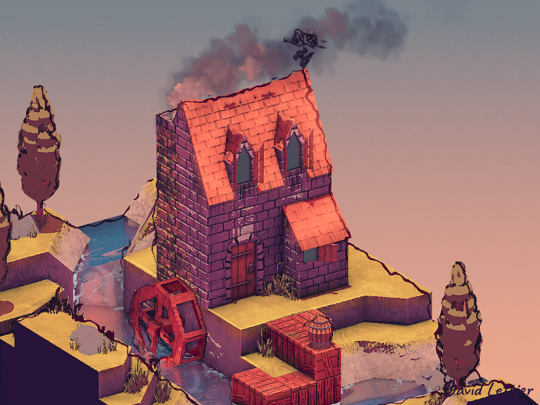

Outlining your scene's geometry can give your game a distinctive look, reminiscent of comic books and cartoons.
The process of outlining is the process of finding and labeling discontinuities or differences. Every time you find what you consider a significant difference, you mark it with your line color. As you go about labeling or coloring in the differences, outlines or edges will start to form.
Where you choose to search for the discontinuities is up to you. It could be the diffuse colors in your scene, the normals of your models, the depth buffer, or some other scene related data.
The demo uses the interpolated vertex positions to render the outlines. However, a less straightforward but more typical way is to use both the scene's normals and depth buffer values to construct the outlines.
// ...
uniform sampler2D positionTexture;
// ...Like SSAO, you'll need the vertex positions in view space. Referrer back to SSAO for details.
// ...
uniform sampler2D colorTexture;
// ...The demo darkens the colors of the scene where there's an outline. This tends to look nicer than a constant color since it provides some color variation to the edges.
// ...
float minSeparation = 1.0;
float maxSeparation = 3.0;
float minDistance = 0.5;
float maxDistance = 2.0;
int size = 1;
vec3 colorModifier = vec3(0.324, 0.063, 0.099);
// ...The min and max separation parameters control the thickness of the
outline depending on the fragment's distance from the camera or depth.
The min and max distance control the significance of any changes found.
The size parameter controls the constant thickness of the
line no matter the fragment's position. The outline color is based on
colorModifier and the current fragment's color.
// ...
vec2 texSize = textureSize(colorTexture, 0).xy;
vec2 fragCoord = gl_FragCoord.xy;
vec2 texCoord = fragCoord / texSize;
vec4 position = texture(positionTexture, texCoord);
// ...Sample the position texture for the current fragment's position in the scene. Recall that the position texture is just a screen shaped quad making the UV coordinate the current fragment's screen coordinate divided by the dimensions of the screen.
// ...
float depth =
clamp
( 1.0
- ( (far - position.y)
/ (far - near)
)
, 0.0
, 1.0
);
float separation = mix(maxSeparation, minSeparation, depth);
// ...The fragment's depth ranges from zero to one. When the fragment's view-space y coordinate matches the far clipping plane, the depth is one. When the fragment's view-space y coordinate matches the near clipping plane, the depth is zero. In other words, the depth ranges from zero at the near clipping plane all the way up to one at the far clipping plane.
// ...
float separation = mix(maxSeparation, minSeparation, depth);
// ...Converting the position to a depth value isn't necessary but it allows you to vary the thickness of the outline based on how far away the fragment is from the camera. Far away fragments get a thinner line while nearer fragments get a thicker outline. This tends to look nicer than a constant thickness since it gives depth to the outline.

// ...
float mx = 0.0;
for (int i = -size; i <= size; ++i) {
for (int j = -size; j <= size; ++j) {
// ...
}
}
// ...Now that you have the current fragment's position, loop through an i by j grid or window surrounding the current fragment.
// ...
texCoord =
( fragCoord
+ (vec2(i, j) * separation)
)
/ texSize;
vec4 positionTemp =
texture
( positionTexture
, texCoord
);
mx = max(mx, abs(position.y - positionTemp.y));
// ...With each iteration, find the biggest distance between this fragment's and the surrounding fragments' positions.

// ...
float diff = smoothstep(minDistance, maxDistance, mx);
// ...Calculate the significance of any difference discovered using the
minDistance, maxDistance, and
smoothstep. smoothstep returns values from
zero to one. The minDistance is the left-most edge. Any
difference less than the minimum distance will be zero. The
maxDistance is the right-most edge. Any difference greater
than the maximum distance will be one. For distances between the edges,
the difference will be between zero and one. These values are
interpolated along a s-shaped curve.
// ...
vec3 lineColor = texture(colorTexture, texCoord).rgb * colorModifier;
// ...The line color is the current fragment color either darkened or lightened.

// ...
fragColor.rgb = vec4(lineColor, diff);
// ...The fragment's RGB color is the lineColor and its alpha
channel is diff.

For a sketchy outline, you can distort the UV coordinates used to sample the position vectors.

// ...
uniform sampler2D noiseTexture;
// ...Start by creating a RGB noise texture. A good size is either 128 by 128 or 512 by 512. Be sure to blur it and make it tileable. This will produce a nice wavy, inky outline.
// ...
float noiseScale = 10.0;
// ...The noiseScale parameter controls how distorted the
outline is. The bigger the noiseScale, the sketchier the
line.
// ...
vec2 fragCoord = gl_FragCoord.xy;
vec2 noise = texture(noiseTexture, fragCoord / textureSize(noiseTexture, 0).xy).rb;
noise = noise * 2.0 - 1.0;
noise *= noiseScale;
// ...Sample the noise texture using the current screen/fragment position
and the size of the noise texture. Since you're distorting the UV
coordinates used to sample the position vectors, you'll only need two of
the three color channels. Map the two color channels from
[0, 1] to [-1, 1]. Finally, scale the noise by
the scale chosen earlier.
// ...
vec2 texSize = textureSize(colorTexture, 0).xy;
vec2 texCoord = (fragCoord - noise) / texSize;
vec4 position = texture(positionTexture, texCoord);
// ...When sampling the current position, subtract the noise vector from the current fragment's coordinates.

You could instead add it to the current fragment's coordinates which will create more of a squiggly line that loosely follows the geometry.
// ...
texCoord =
(vec2(i, j) * separation + fragCoord + noise)
/ texSize;
// ...
vec4 positionTemp =
texture
( positionTexture
, texCoord
);
// ...When sampling the surrounding positions inside the loop, add the noise vector to the current fragment's coordinates. The rest of the calculations are the same.
(C) 2019 David Lettier
lettier.com